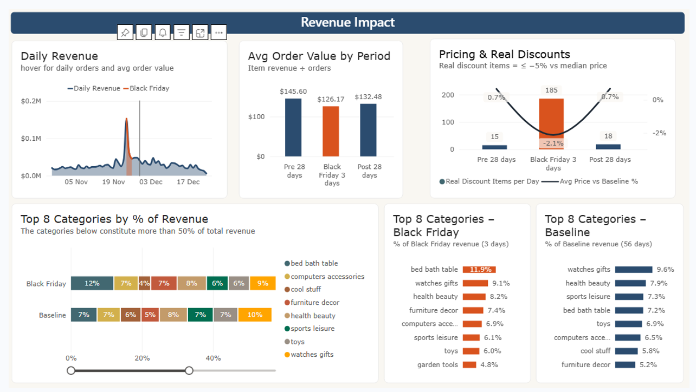
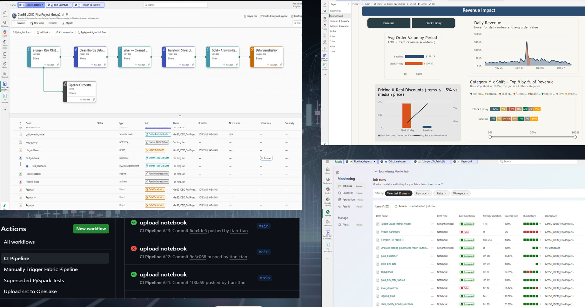
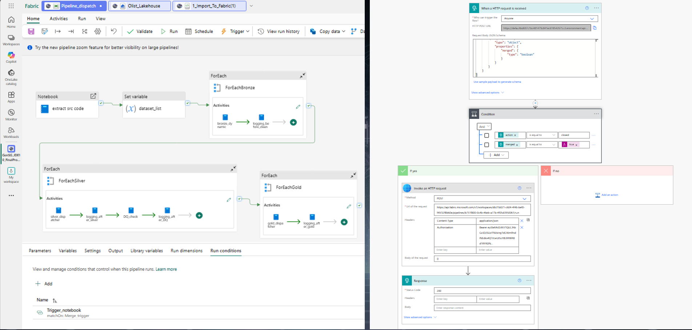

The Data Source
9 Disconnected Tables
Orders
Items
Customers
Payments
Reviews
Products
Sellers
Geolocation
Categories
Does Black Friday Change How Customers Buy?
Transforming 100k+ raw Brazilian e-commerce orders into governed business intelligence.
1. Volume & Revenue
Measuring the gross sales & Average Order Value (AOV) impact.
2. Operational Strain
Correlating delivery delays with customer review scores.
Data Modeling: Physical Storage Strategy
Designing a strict Galaxy Schema mapped intentionally across Fabric Lakehouse unmanaged and managed layers.
Medallion ELT Pipeline
1. Bronze (Raw)
Unmanaged FilesIngest CSVs into Files/bronze/ for immutable lineage.
2. Silver (Conformed)
Managed CatalogStandardize and drop nulls. Save as dbo.silver_*.
3. Gold (Analytics)
Managed CatalogEstablish strict Star Schema in dbo.gold_*.
Target Galaxy Schema Relationships
4 Dimensions (The 'Who/What')
PK: customer_id
PK: product_id
PK: seller_id
PK: date_id (Flags Black Friday)
3 Facts (The Metrics)
FKs: customer_id, product_id, date_id
Answers: Volume & Operational Strain
FKs: order_id, date_id
Answers: Revenue Impact
Fabric Trial Constraints
We had the perfect data strategy, but 4 engineers sharing a free Microsoft Fabric Trial immediately hit a hard wall.
Compute Unit Burn
Concurrent PySpark executions quickly overwhelmed the Trial capacity, causing timeouts and halting active development.
Collaboration Blocked
Notebooks locked up when multiple users attempted concurrent edits, severely impacting team velocity.
Pivot: Decoupling Logic to Local VS Code
Extracting code from monolithic Fabric Notebooks into modular local scripts for zero-cost cleaning, validation, and CI/CD testing.
# Read Data
df = spark.read.format("delta").load("Tables/bronze_orders")
# Clean & Validate (Mixed together)
df_clean = df.dropDuplicates(["order_id"])
df_clean = df_clean.filter(col("order_status").isNotNull())
if df_clean.count() == 0: raise Exception("No Data")
# Write
df_clean.write.format("delta").mode("overwrite").save("Tables/silver_orders")
Hard to test, burns cloud CU, blocking team.
# 1. silver_transform.py (Isolated Logic)
def clean_orders(df):
return df.dropDuplicates(["order_id"]).dropna(subset=["order_status"])
# 2. test_silver.py (Local Validation via Pytest)
def test_clean_orders_uniqueness():
mock_df = spark.createDataFrame(mock_data)
result = clean_orders(mock_df)
assert result.count() == result.select("order_id").distinct().count()
➜ pytest tests/silver/ --disable-warnings
tests/silver/test_silver.py ...... [100%]
6 passed in 1.45s
Data Architecture Rectifications
Solving critical business logic flaws in the Silver and Gold layers prior to BI deployment.
1. Customer Entity Resolution
Counting transactional customer_id yielded ~100% false "new customers". Rectified by keying on true human entities.
# Deriving True First Purchase
df.groupBy("customer_unique_id") \
.agg(min("order_purchase_timestamp"))
2. Real Discount Derivation
Raw data lacked discount metrics. Rectified by calculating event prices against a pre-event baseline median per product.
# Mathematical Discount Check
df_event.join(df_baseline, "product_id") \
.withColumn("ratio", (event - base) / base)
3. Preventing Revenue Fan-Out
Joining payments and items directly to orders caused silent 2x-5x revenue inflation via Cartesian products.
# Decoupling Facts (Gold Layer)
df_payments.groupBy("order_id") \
.agg(sum("payment_value"))
The Integration Gap
Local code was fast, but deploying it automatically to the Fabric Pipeline was blocked.
GitHub (Local)
Fabric Pipeline
Automating the Trigger via Service Principal
Since direct deployment failed, we built a GitHub Actions workflow to update a trigger state.
1. PR Merged
Code passes tests and merges to Main.
2. Auth via SP
GitHub Actions authenticates to Azure via Service Principal.
3. Update Trigger
REST API safely updates a timestamp in a specific Fabric Notebook.
The Power Automate Webhook
Bridging the final gap: Event-driven orchestration with zero manual intervention.
Webhook Orchestration
Power Automate constantly monitors the "Trigger Notebook" updated by GitHub. When a change is detected, it fires an HTTP Webhook directly to the Fabric API, initiating the full Medallion Pipeline run automatically.
Bypasses Trial Admin Restrictions
Notebook Updated
HTTP Webhook
Pipeline Runs
Complete End-to-End Architecture
Local Dev
VS Code & Pytest
CI/CD
Actions + Service Principal
Power Automate
Webhook Trigger
Fabric Medallion
Bronze > Silver > Gold
Power BI
Direct Lake Dashboard
Architectural Reality Check
Framing workarounds not as mistakes, but as resilient problem-solving under trial constraints.
.py) from GitHub inside pipeline..whl or .egg libraries installed natively in Databricks/Fabric.Quality Assurance & Ruthless Prioritization
Ensuring code correctness while aggressively scoping out low-value data to respect compute limits.
1. Pre-Deployment
Repeatable pull-request checks via Pytest before code touches the cloud environment.
2. Cloud Data Profiling
Validating actual outputs in Fabric (Data Quality circuit breakers, row counts, null checks).
3. Strategic Exclusions
Dropped dim_geolocation and ignored heavy NLP review text to guarantee pipeline stability.
Power BI Direct Lake Report

Business Value Delivered
We successfully transformed 9 chaotic tables into an automated, interactive intelligence asset, definitively answering the Black Friday hypotheses.
Future Architecture Evolution
Preparing the pipeline for enterprise scale, data volatility, and stricter governance.
Handling Data Changes
Implementing Slowly Changing Dimensions (SCD Type 2) in the Gold layer.
# Tracking Seller Location Updates
DeltaTable.alias("target").merge(
source_df.alias("source")
)
Schema Evolution & DQ
Migrating from static Pytest assertions to dynamic Data Quality frameworks.
- Implement Great Expectations
- Enable Delta `mergeSchema` for drift
- Anomaly detection on order volume
Enterprise Scalability
Optimizing performance as raw data volume scales beyond 100k+ records.
- FinOps: Fabric Compute (CU) Tracking
- Optimize PySpark partitioning logic
- Evaluate streaming over batch triggers
Proof of Work & Deliverables Directory
Architecture Proof of Work Hub
Deliverable Links
Architecture Snapshots
Click snapshot to zoomFabric Pipeline
Orchestration
Medallion ELT pipeline execution across Bronze, Silver, and Gold layers.
Power Automate
Webhook Flow
Event-driven automation triggering Fabric pipeline upon GitHub merge.
Proof of Work Justification: Screenshots prove full end-to-end functionality of Microsoft Fabric pipelines and Power Automate webhooks under restricted trial-tenant conditions.